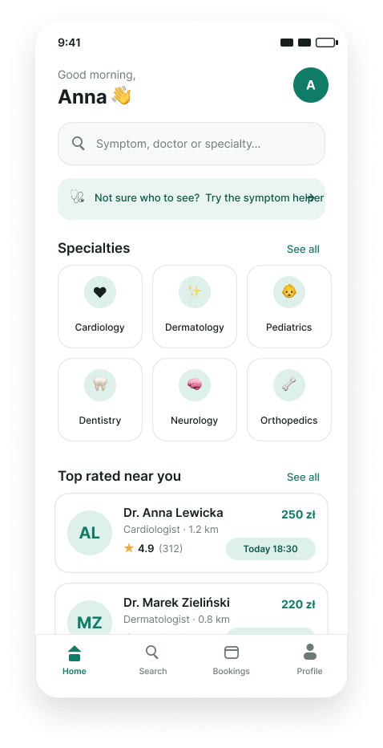
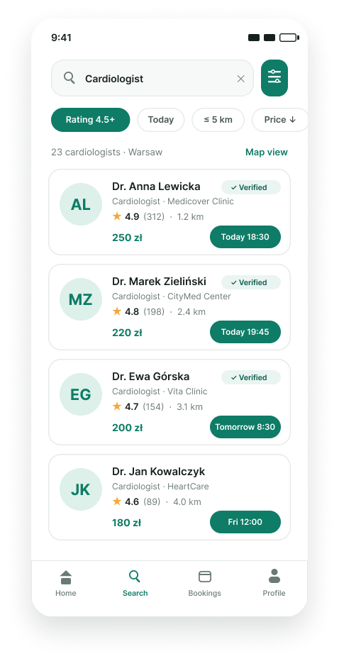
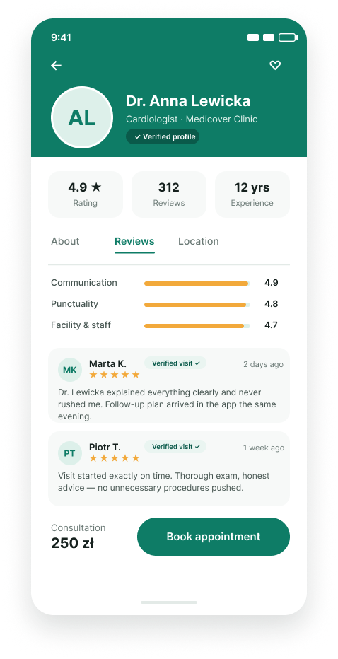
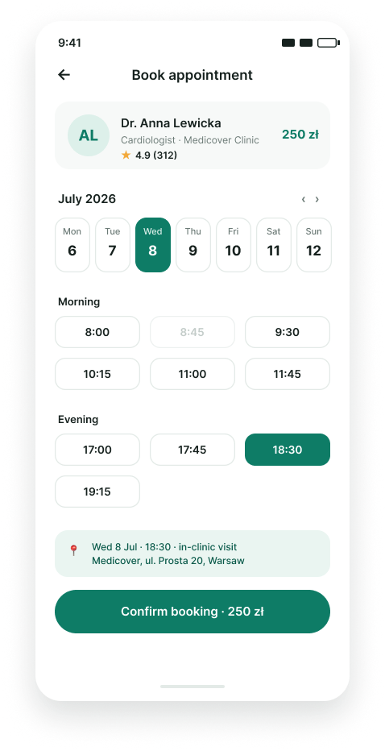
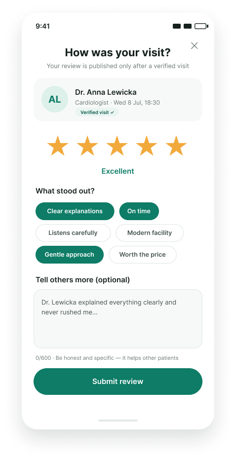
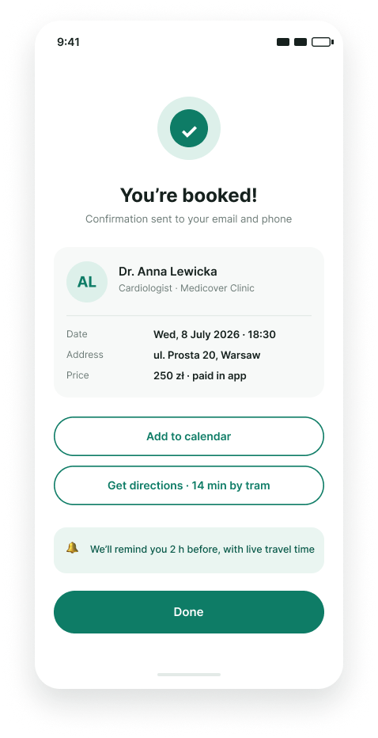
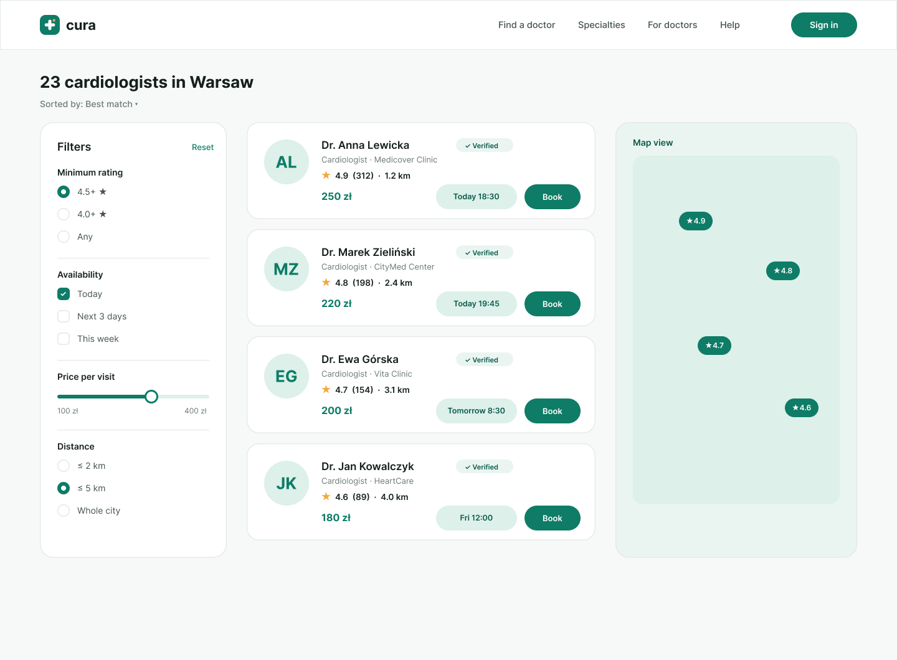

Healthcare choices shouldn't feel like a gamble
Finding a trustworthy doctor is one of the most consequential decisions people make — yet most rely on scattered Google reviews, word of mouth, or pure luck. Cura is a mobile app concept that brings transparency to that decision: verified patient reviews, clear specialist profiles, and effortless appointment booking in one place.
Fragmented, unverified, overwhelming
Initial research surfaced three recurring frustrations: review platforms mix verified and fake feedback, doctor information is scattered across multiple sites, and booking still often means a phone call during working hours. Patients — especially those new to a city — had no single trusted source.
"I spent two evenings researching a dermatologist, and I still wasn't sure the reviews were real."— research participant
Understanding who's searching, and why
I ran 8 user interviews and a survey of 64 respondents to map motivations and pain points. Two primary personas emerged: the Newcomer — recently relocated, needs a full set of doctors quickly and relies heavily on reviews — and the Caregiver — booking for children or aging parents, values credentials and availability over ratings alone.
Mapping the path from symptom to appointment
Journey mapping revealed the emotional low point: comparing options. Users toggled between tabs, lost track of candidates, and abandoned the search. I structured the information architecture around a persistent shortlist — letting users save, compare, and decide without losing context. The IA was validated with a card-sorting exercise before moving to flows.
Designing for confidence at every step
Low-fidelity wireframes focused on three core flows: search & filter, doctor profile & reviews, and booking. Usability tests on the wireframes led to key changes — surfacing verified-review badges directly in search results and reducing the booking flow from five steps to three.
Calm, clinical, human
The visual language leans on a deep calming green — trustworthy without feeling corporate — paired with a warm orange accent for actions and moments of delight. Generous whitespace, rounded geometry, and a clear typographic hierarchy keep dense medical information scannable and reassuring.







#10261F
#1F7A5C
#F5A623
#F6F5F2
A blueprint for trust
The final prototype tested with 6 users achieved a 100% task completion rate on the booking flow, and participants described the experience as "clear" and "reassuring." Beyond the deliverables, Cura demonstrates a complete, research-driven design process — every UI decision traceable back to a user insight.